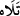

Güneşin batmasından sonra ondan ışık alarak onu izleyip takip eden aya yemin
ederim, demektir. Bu durum, ayın ilk yarısında meydana gelir.
Rağıb der ki: “ demek bir şey diğer şeyi aralarında kendilerinden olmayan bir şey
olmaksızın izledi demektir. Bu izleme bazen cismen, bazen hükümde ona uymakla ve
bazen de okumak ve mânâsını düşünmekle olur. Bu kelimenin okumak anlamındaki kökü
“tilâvet” şeklinde gelir. “Güneşi takip ettiğinde aya” âyetinde kasdedilen ayın güneşe
tâbi olması ve mertebe itibariyle onu izlemesi demektir. Çünkü ay ışığını güneşten alır,
denilmiştir. Ay güneş karşısında onun halifesi mesâbesindedir. Bu hususa “Orada
(gökte) bir ışık kaynağı (güneş) ve aydınlatıcı bir ay yaratanın şanı çok yücedir.”
(el-Furkân, 25/61) âyetiyle dikkat çekildiği söylenmiştir. Âyette güneşin ışık kaynağı,
ayın ise ondan alınan ışık/nur yerinde olduğu haber verilmiştir. “Güneşi ışıklı (zıyâ),
ayı da parlak (nûr) kılan... O’dur” (Yunus, 10/5) âyeti de aynı şekildedir. Zıyâ ise
mertebe olarak nurdan daha üstündür. Çünkü her zıyâ nurdur, ama her nur zıyâ değildir.
Bu âyette, aydınlanma husûsunda ruhu takip ettiğinde, ona doğru yöneldiğinde, onun
nûru ile aydınlanmaya çalıştığında, nefse uymayıp onun zulmeti ile karanlığa
tutulmadığında kalp ayına işâret vardır.
Şeyhim ve senedim Atpazârî Osman Fazlı Efendi -Allah rûhunu rahat ettirsin- el-
Lâihâtü’l-berkıyyât adlı eserinde der ki: “Güneş, ilâhî kemâlî ekmelî hakîkatin
âyeti/sembolü ve ona işârettir. Ay, insânî kemâlî ekmelî hakîkatin âyeti/sembolü ve ona
işârettir. Ay Allah’ın onu yarattığından kıyamet gününe kadar geceleyin güneşin nûrunun
ve zuhûrunun tecellîgâhı ve zuhûr yeridir (mazhar). Böyle olması gece erbabı gecenin
karanlıklarında hedeflerine giden yolda yol alıp yürürken yollarını bulmaları içindir.
İşte bunun gibi insânî kemalî ekmelî hakîkat de aynen böyledir. Bu hakîkati de Allah
yarattığından sonsuza kadar ilâhî kemâlî ekmelî hakîkatin kâinâttaki nûrunun ve
zuhûrunun tecellîgâhı ve mazharıdır (zuhûr yeri). Böyle olması kâinat erbabının kevnî
âlemlerde ve mânevî mertebelerde/atvâr seyr ü sülûkleri sırasında kâinâtın
karanlıklarında yollarını bulmaları içindir. Bu seyr ü sülûk nüzûlen âlem-i imkâna seyr
sırasında, urûcen ise âlem-i vücûba sülûk sırasındadır.
Güneş ile ay arasında meydana gelen yakınlaşma ve kavuşma sırasında güneşe âid
kabzedici teveccüh ve cezbedici yöneliş ile ay güneşin nûrunda ve kendisinde, kendi
nûrundan ve kendisinden hiçbir eser kalmayacak şekilde tamamen nûrundan ve
kendisinden fânî/yok olur. Güneş ile ay arasında meydana gelen tam karşı karşıya gelme
ve ayrılma sırasında, nûrundan ve nefsinden hiçbir şey yok olmadığı halde güneşin nûru
ve nefsi ile kemâl bularak kendi nuru ve nefsiyle, yâni cirmi ile kalır. Bu ise defalarca
ve tekrar tekrar kıyamet gününe kadar ayı kendi nefsine gönderme/bırakma ve nûruna
yayma sûretiyle olur. İşte bunun gibi insânî kemâlî ekmelî hakîkat de ilâhî kemâlî ekmelî
hakîkatin nurunda ve taayyününde tamamen kendi nûrundan ve taayyününden fânî olur.
Öyle ki insânî hakîkatin nûr ve taayyününden onun (ilâhî hakîkatin) ezelî ebedî sermedî
nûruna ve taayyününe kabz ve cezb sûretiyle zât-ı ahadiyyet ve cem‘iyyet-i mutlaka
mertebesinde hâsıl olan ilahî vuslat sırasında insânî hakîkatin hiçbir izi ve eseri kalmaz.